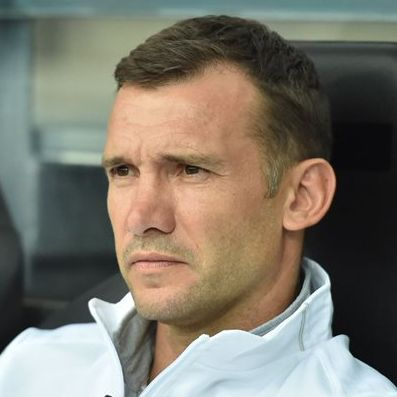

Andriy Shevchenko
29 September 1976 (age 46)
One of most famous socker player of Ukraine in the world
Andriy Mykolayovych Shevchenko,[4] or Andrii Mykolaiovych Shevchenko[5]
(Ukrainian: Андрій Миколайович Шевченко, pronounced [ɐnˈd⁽ʲ⁾r⁽ʲ⁾ij mɪkoˈlɑjowɪtʃ
ʃeu̯ˈtʃɛnko]; born 29 September 1976) is a Ukrainian football manager,
a former professional football player and a former politician.
Shevchenko played as a striker for Dynamo Kyiv, AC Milan, Chelsea and the
Ukraine national team. He was head coach of Serie A club Genoa.

Shevchenko as Ukraine manager in 2017
The following list is a time line of Andriy Shevchenko
- 1976 - Shevchenko was born in Dvirkivshchyna, Ukrainian SSR.
- 1986 - Enrolled into the football section coached by Oleksandr Shpakov.
- 1992 - Young Shevchenko started out his professional career in Dynamo Kyiv at age 16.
- 1999 - Shevchenko joined Italian club AC Milan for a then-record transfer fee of $25 million.
- 2005 - During the summer of 2005, there were persistent reports that Chelsea owner Roman Abramovich offered a record sum €73 million and striker Hernán Crespo to Milan in exchange for Shevchenko.
- 2006 - Became Milan's second highest all-time goalscorer, behind Gunnar Nordahl, after netting against Treviso.[32] He finished the season as joint fourth-top scorer with 19 goals in 28 games. Shevchenko ended his seven-year stint with Milan with 175 goals in 296 games.
- 2006 - On 28 May, Shevchenko left Milan for Chelsea for £30.8 million (€43.875million).
- 2008 – 2009Shevchenko was not used very often in the starting line-up at Chelsea and Shevchenko was loaned back to his old club for the 2008–09 season.
- 2009 - On 28 August, Shevchenko signed a two-year deal at his former club Dynamo Kyiv
- 2012 - On 28 July, Shevchenko announced that he was quitting football for politics.
- 2012 - In November, Shevchenko initially refused to accept Football Federation of Ukraine's proposal to become head coach of the Ukraine national team.
- 2021 - On 1 August, he announced his departure from the post. On 7 November, Shevchenko was announced as the new head coach of Serie A side Genoa.